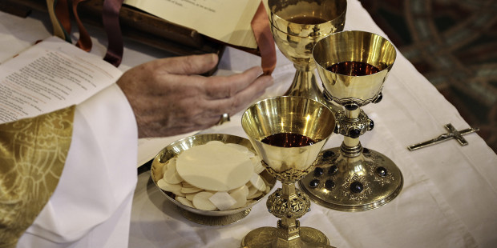
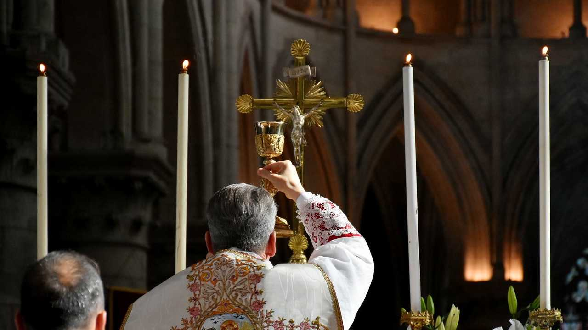

Conceito Transubstancial
| Ideologia | Conversão | |
| Transubstanciação é a mudança da substância do pão e do vinho na substância do Corpo e Sangue de Jesus Cristo no ato da consagração. A doutrina adotada pela Igreja Católica defende e acredita na Presença Real de Cristo na Eucaristia. As Igrejas Ortodoxas, Luteranas e Calvinistas creem na Presença Real, mas não na Transubstanciação. A crença da Transubstanciação se opõe à da Consubstanciação, que sustenta que as substâncias do corpo e do sangue de Cristo coexistem com as substâncias do pão e do vinho.O termo é a conjunção das palavras latinas trans (além) e substantia (substância), além da substância. | A transubstanciação é a conversão doutrinária católica na qual toda a substância do pão se transforma no Corpo de Cristo e a do vinho no seu Sangue durante a consagração na Missa. As aparências sensíveis (aparência, sabor, cheiro) permanecem as mesmas, mas a substância muda, tornando Cristo real e substancialmente presente. |  |
| O dogma da Transubstanciação baseia-se nas passagens do Novo Testamento em que Jesus diz no discurso do Pão da Vida: O Pão que eu hei de dar é a minha Carne para Salvação do mundo; O Meu Corpo é verdadeiramente uma comida e o Meu Sangue é verdadeiramente uma bebida,[1] e no fato de que Jesus, ao tomar o pão em Suas mãos na Última Ceia, deu a seus discípulos dizendo: Tomai todos e comei. Isto [o pão] é o Meu Corpo, que é entregue por vós, afirmada como união do fiel a Cristo, de maneira analógica à união da Vida Trinitária: Assim como o Pai, que vive, Me enviou e Eu vivo pelo Pai, assim também o que Me come viverá por Mim. | A transubstanciação é um conceito teológico central na doutrina católica que descreve a conversão de toda a substância do pão na substância do Corpo de Cristo, e de toda a substância do vinho na substância do seu Sangue durante a consagração na Santa Missa. Esta conversão é considerada "complexa" e única, pois difere de transformações naturais ou meramente simbólicas. |  |
| São Francisco de Assis: 'Oh, quão digno de louvor é esta solenidade, na qual o corpo de Jesus Cristo, nosso Senhor, é oferecido como alimento'. | ||